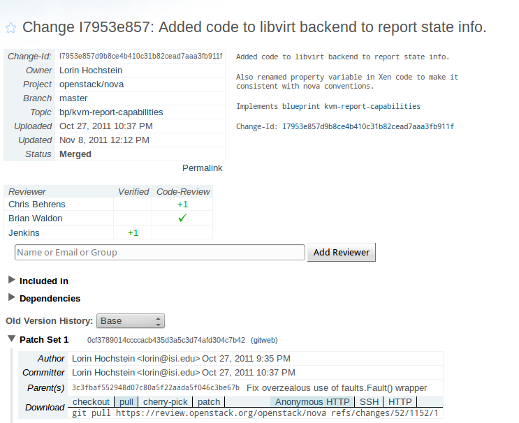
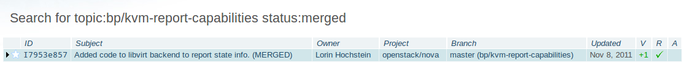

Systems
- https://jenkins.openstack.org
- https://review.openstack.org
- http://ci.openstack.org (docs)
- https://jenkins.stackforge.org
Projects
- nova (compute)
- swift (object storge)
- glance (image service)
- keystone (identity service)
- quantum (network service)
- horizon (dashboard)
- cinder (volume service)
- python-novaclient
- python-swiftclient
- python-glanceclient
- python-keystoneclient
- python-quantumclient
- python-cinderclient
- python-openstackclient
Contributors
- Individual Contributors
- Commercial Entities
- Number, quality, and area of contributions can change daily
Release Management
- Time Based Releases
- Six Month Cadence
- Design summits each cycle
- Continuously Open Trunk
- Develop directly on master
- One Month Milestone Releases
- Post-release Stable Branches
Vision
- Consistent Tooling
- Consistent Process
- Consistent Product
- Multiplier Effect
Consistent Tooling
- Minimize meta-development
- Process divergence == wasted developer time
- Lowers onboarding time
- Consolidate tool development
- Minimize project-specific weird build crud
Development Infrastructure Systems
OpenID SSO Integration

Environment
- Ubuntu
- Python
- pep8 standards
- openstack.common
- virtualenv/pip
- IRC (#openstack-dev, #openstack-meeting)
- devstack
- gated trunk based on master
Gated Trunk
- Ensures Code Quality
- Protects developers
- Devs always start from working code
- Protects tree
- Egalitarian
- Process is the same for everyone
- Process is transparent
- Process is automated
Everything Is Automated

Process Flow
- Code is written and locally tested in a virtualenv
- Code is submitted for code review to gerrit
- Code is run through patch-uploaded automated checks
- Code is peer-reviewed
- Code is accepted or rejected by core team
- Code is run through pre-merge automated checks
- Code is merged or rejected
- Code is run through post-merge automated checks
Gerrit
- Developed by Google for Android
- Stand-alone patch review system
- Integration points: hooks, JSON queries, event-stream
- Extensible review categories, default: Verified, Code-Review
Bug Integration - Gerrit

Bug Integration - Launchpad

Blueprints - Gerrit

Blueprints - Launchpad

Blueprints - Gerrit Topics

Pre-merge Check

States of a Patch
- Code Submitted
- Code Verified
- Code Reviewed
- Code Accepted
- Code Merged
Approved Reviews

Types of Gerrit Triggers
- Patchset uploaded
- Change merged
- Comment added (review state)
Git Review
- External Git subcommand
- Developers can easily incorporate code review into git workflow
- Zero-configuration
- Can be used for any project, being adopted by other projects
corvus@shiprock:~/rs/github/quantum$ git commit -a
[new-versionpy ddf1dce] Base version.py on glance.
3 files changed, 28 insertions(+), 107 deletions(-)
delete mode 100644 version.py
corvus@shiprock:~/rs/github/quantum$ git review
remote: Resolving deltas: 0% (0/3)
remote:
remote: New Changes:
remote: https://review.openstack.org/3072
remote:
To ssh://corvus@review.openstack.org:29418/openstack/quantum.git
* [new branch] HEAD -> refs/for/master/bug/916018
Types of Tests
- Unit tests
- Integration tests
- May be able to run on virtual servers, should run on real servers
- Difficult or impossible for a developer to run
Specific Challenges/Solutions
- Testing effect of merging change
- Using cloud builders
- Large numbers of similar projects
- Disparate hardware configurations
Gerrit Git Prep
- Test the result of the change, not the change
- https://github.com/openstack/openstack-ci-puppet/blob/master/modules/jenkins_slave/files/slave_scripts/gerrit-git-prep.sh
- For each gerrit change:
- grabs target branch
- cleans tree
- merges change to be tested
Interrelated Integration Testing
- devstack-gate
- spin up fresh node
- run devstack
- run integration tests
- Gate proposed change against current state of other projects
Devstack-Gate Problems
- Tests are slow
- Clouds suck
- github sucks
- pypi sucks
- Ubuntu sucks
- ALL NETWORK ACCESS IS FAILURE
Devstack-Gate Solutions
- Create a new node
- pre-fetch all needed packages, repos
- snapshot to cloud image
- maintain a pool of cloud nodes
- slave can only be used for one test run
- set of python and shell scripts triggered by jenkins
Jclouds-Plugin
- ec2 plugin useless to us (sorry)
- Adrian Cole and Cloudsoft wrote jclouds-plugin
- Provisions on any provider via jclouds
- Image pre-creation and pooling features
- single use slaves
- Slave provisioning as build step
Zuul
- A general purpose trunk gating system
- Interfaces with Gerrit and Jenkins
- Flexible configuration allows for many kinds of project automation
- Allows parallel testing of serialized changes
Bottlenecking
- Serialize changes across all projects
- Speculative execution of tests
- Run in parallel in order triggered
- Assume success
- Start over on failure
Zuul Simulation
Zuul Check Queue
queues:
- name: check
manager: IndependentQueueManager
trigger:
- event: patchset-created
success:
verified: 1
failure:
verified: -1
Zuul Gate Queue
queues:
- name: gate
manager: DependentQueueManager
trigger:
- event: comment-added
approval:
- approved: 1
start:
verified: 0
success:
verified: 2
submit: true
failure:
verified: -2
Zuul Post-Merge Queue
queues:
- name: post
manager: IndependentQueueManager
trigger:
- event: ref-updated
ref: ^(?!refs/).*$
Zuul Silent Queue
queues:
- name: silent
manager: IndependentQueueManager
trigger:
- event: patchset-created
Zuul Project Configuration
projects:
- name: openstack/nova
check:
- gate-nova-merge:
- gate-nova-pep8
- gate-nova-python26
- gate-nova-python27
- gate-integration-tests-devstack-vm
gate:
- gate-nova-merge:
- gate-nova-pep8
- gate-nova-python26
- gate-nova-python27
- gate-integration-tests-devstack-vm
post:
- nova-tarball
silent:
- gate-tempest-devstack-vm
Example Job
main:
name: gate-ceilometer-python26-essex
review_site: review.stackforge.org
github_org: stackforge
project: ceilometer
authenticatedBuild: true
concurrent: true
assigned_node: oneiric
triggers:
- zuul
builders:
- gerrit_git_prep
- python26_essex
Example Template
project:
template: python_jobs
values:
name: python-novaclient
disabled: false
github_org: openstack
review_site: review.openstack.org
publisher_site: nova.openstack.org
tarball_project: nova
doc_publisher_site: docs.openstack.org
node: precise